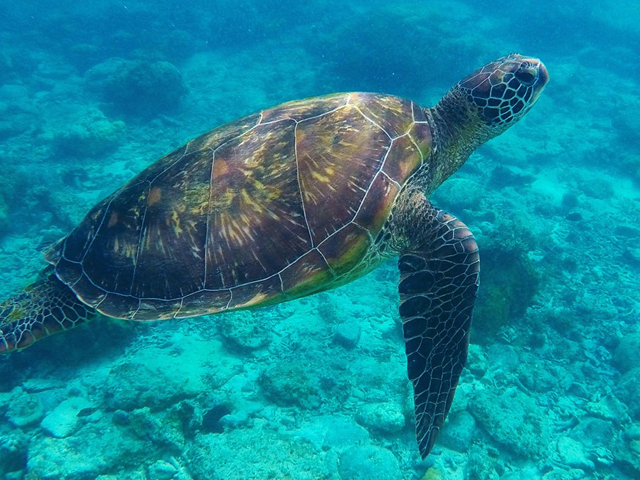
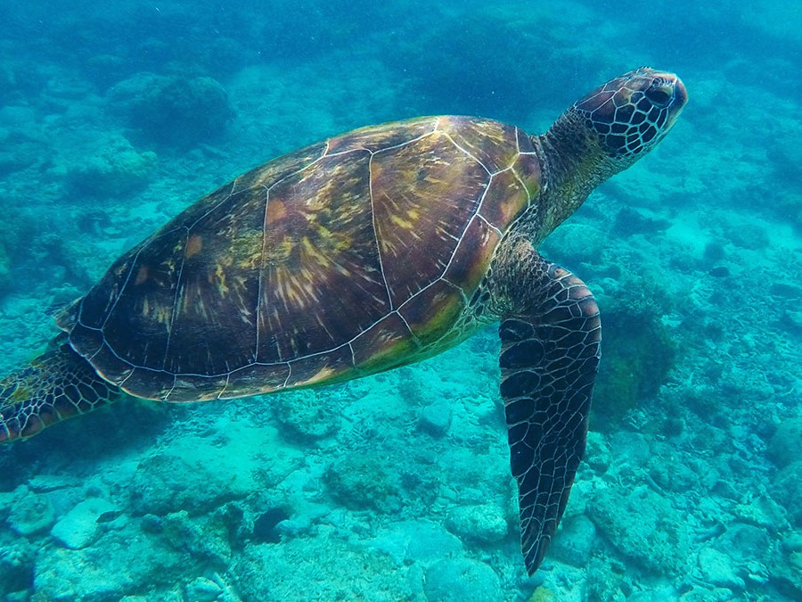

GREEN TURTLE
The largest hard-shelled sea turtle is the green sea turtle. They stand out from other sea turtles in that they primarily consume seagrasses and algae as herbivores. Their name derives from the greenish hue of their fat, not from the color of their shells.
There are green turtles all over the world. They have nesting grounds in more than 80 nations and reside along the coastlines of more than 140 nations.
Green turtles have historically been overfished for their meat, eggs, and fat, which has led to population declines worldwide.
The killing of green turtles for their meat or to supply their shells to the wildlife trafficking industry, however, continues to pose a threat to their recovery in some areas.

Green Turtles in Sri Lanka
The most common turtle found in Sri Lanka is the green turtle. They can also be found in the Atlantic, Pacific, and Indian oceans. Carnivores predominate among young green turtles. Adults, however, are herbivores that use their finely serrated jaws to only consume marine vegetation. They can weigh up to 250 kg and reach a maximum length of 1m. A mature female will typically lay 120 to 140 eggs at a time.The beach with the highest population density of Green Turtles in Sri Lanka
HAWKSBILL TURTLE
Hawksbill sea turtles are found in tropical and sub-tropical waters across the world's major oceans. Their distinctive beak-like mouth, resembling that of a hawk, enables them to search for food in hard-to-reach cracks and crevices.
Unlike other sea turtle species, hawksbills have the ability to survive primarily on a diet of sponges. These turtles hold a significant role in maintaining the balance of marine ecosystems.
Unfortunately, hawksbills face a unique threat in many regions, as they are hunted for their exquisite shells, often referred to as "tortoise shell." These shells are highly valued by artisans for creating various types of jewelry and trinkets.

Hawksbill Turtles in Sri Lanka
The Hawksbill turtle earned its name in English due to its slender head and beak resembling that of a bird. This unique feature allows it to capture prey concealed in narrow crevices. The species is commonly found in Sri Lanka and other warm waters, both tropical and subtropical. Despite being relatively small compared to other sea turtle species, the Hawksbill is famous for its striking shell composed of 13 symmetrical sections.The beach with the highest population density of Hawksbill Turtles in Sri Lanka
LOGGERHEAD TURTLE
The loggerhead turtle derives its name from its robust head, which houses strong jaw muscles enabling it to crush hard-shelled prey such as clams and sea urchins. Unlike other sea turtle species, loggerheads are less targeted for their meat or shells.
However, they face a significant threat from bycatch, the unintentional capture of marine animals in fishing gear, as they often interact with fishing operations.
Loggerhead turtles are known for their long-distance migrations, traveling across vast oceanic distances to reach their nesting and foraging grounds.
In the Mediterranean region, loggerhead turtles are abundant and frequently nest along the coastlines .
Loggerhead turtles in Sri Lanka
The Loggerhead Turtle is a rare species in Sri Lanka, with limited sightings compared to other turtle species found in the region. The Loggerhead Turtle, while uncommon in Sri Lanka, is commonly found along the East Coast of America. Recognizable by its prominent feature, the large head, it is typically adorned in shades of red and brown. Growing up to a maximum length of 1 meter and weighing between 170 and 200 kilograms, Loggerhead Turtles are primarily carnivorous.The beach with the highest population density of Loggerhead turtles in Sri Lanka
OLIVE RIDLEY TURTLE
The olive ridley turtle derives its name from the olive green coloration of its distinct heart-shaped shell. It is considered one of the smaller species of sea turtles and is primarily found in the tropical regions of the Pacific, Indian, and Atlantic oceans.
Olive ridley turtles have a global distribution; however, their population has significantly declined compared to historical estimates, such as the previous count of 10 million olive ridleys in the Pacific Ocean.
This decline can be attributed to the excessive hunting of these turtles for their meat and eggs. The greatest threats faced by olive ridleys are the accidental capture in fishing gear and the direct harvesting of turtles and their eggs.
 

Olive Ridley Turtles in Sri Lanka
The Olive Ridley turtle, which is one of the two species of ridley turtle, is the smallest of all sea turtles and can grow up to a maximum length of 65cm and weigh between 35-45kg. It is named after the colour of its shell, which is olive or rust. These turtles nest annually and a significant number of them lay their eggs on Kosgoda Beach, with a single female depositing over 150 eggs at a time.The beach with the highest population density of Olive Ridley Turtles in Sri Lanka
LEATHERBACK TURTLE
The leatherback sea turtle holds the title for being the largest turtle in the world. Unlike other sea turtles, they do not possess scales and a hard shell.
Their name derives from their resilient and rubbery skin, and they have remained virtually unchanged since dinosaur era.
Leatherbacks are known for their extensive migrations, covering over 10,000 miles annually as they travel between nesting and feeding grounds.
They are skilled divers, surpassing the depths reached by most marine mammals, with a recorded dive of nearly 4,000 feet.
With its broad distribution, the leatherback turtle can be found nesting predominantly on tropical and subtropical beaches, showcasing the widest global range among all reptiles.